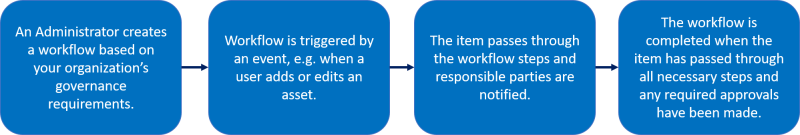
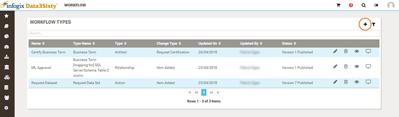
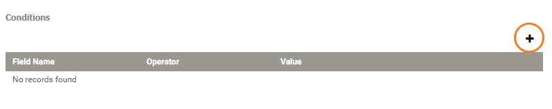

|
|
Establishing workflows
A workflow is a set of steps that can be applied to an artifact to control how the item is managed within the business glossary. By establishing a workflow, you are specifying the process that end users will follow when they want to add, change or edit an artifact.
You can include conditions in the workflow so that the relevant parties are notified when an end user takes a specified action, giving approvers the opportunity to approve or reject the change.
Tip: This topic describes how an Administrator can establish a new workflow. For an overview on following workflows once they are set up, see Following workflows.
The following flowchart describes the workflow process:

Building a new workflow
You can access the Workflow page by clicking the Administration icon on the left of the screen and selecting Workflow > Workflow. From here, you can build a new workflow.
- Click the Add icon in the top right corner of the Workflow Types panel to create a new workflow:

From this panel, you can also edit, delete, view or monitor a workflow by clicking the relevant icon to the right of the selected item.
- In the New Workflow Type panel, type a Name for the workflow, for example "Business Term Change".
The first few steps of creating a workflow require you to specify a trigger i.e. an event or an action that when carried out by an end user initiates the workflow.
- From the Change Type list, select a workflow trigger. For example, to initiate a workflow each time a new Business Term is added, select Item Added.
The following table describes the triggers that you can select when creating a new workflow:
Change type Definition Item Added Notifies an administrator or designated user when a user has added a new object.
In the case of adding an Action Type, the Item Added change type notifies an administrator, designated user, or responsible parties when a user takes an action on a specific asset.
Item Changed Notifies an administrator, designated user, or responsible parties when a user has changed any activity on a specified asset type.
Item Removed Notifies an administrator or designated user when a user has deleted an existing entry of a specified asset. Schedule Notifies an administrator, designated user, or responsible parties of any changes or specified changes that occur over a specified period of time.
Rule Result When Data Quality Rules are configured in Infogix Data3Sixty Govern, Rule Results can be loaded via an API. When Rule Results are loaded via an API this can set off a workflow using this trigger.
Fusion Loaded Notifies an administrator or designated user when data is loaded via Fusion for a specific Fusion Type, see Fusion.
Request Certification Allows users to request certification of an asset from an item's detail page, see Certification workflow. - From the Object Type list, select the item type to which you want to relate the workflow. For example, select Artifact::Business Term if you want the workflow to be triggered when a user adds a new Business Term.
- If you want to specify a greater level of granularity so that your workflow is only triggered in very specific situations, you can add Conditions by clicking the Add icon in the Conditions panel:

Note: If you add more than one condition, the logic between the conditions is "AND" i.e. both conditions must apply for the workflow to be triggered.
- Click Next.
Once you have established a workflow trigger, you can being building your workflow. Every workflow must have a Start activity, a Finish activity, and at least one additional activity that occurs between the start and finish. You can select from the following activities when creating your workflow:
Workflow activity Description Start Marks the entry into the workflow. Finish Marks the successful completion of the workflow. Terminate Marks the unsuccessful completion of the workflow. Field Change Updates a value, clears a value or updates a value that was entered or selected on a previous Form activity. For example, you can use the Field Change activity to update the status of an item in a certification workflow, see Certification workflow.
Email Notification Sends an email notification to a specific role or person.
Tip: You can notify a group of people by choosing Specific User and then typing a group email address, for example datastewards@example.com.
When configuring the Email Notification activity, you can use tokens as placeholders to add text to the body or subject of the email by selecting an option from the Append field value list.
Form Provides a custom form that is inserted into the workflow giving a reviewer the opportunity to certify an action.
See Creating a form.
State Change Controls whether an artifact is visible within the application. This only applies to adding a data lineage relationship. The state of an item is not visible to end users, and should not be confused with the status, see Field Change above.
Choose from:
- Pending Add
- Active
- Pending Delete
- Active
By default, an item will not have any state. An asset will only transition through the above states if you have established a workflow using the State Change activities.
SQL Procedure Reserved for use by Infogix Implementation Specialists. The Infogix team will write a custom procedure to handle complex functionality. Relationship Change Updates or clears from a value on a previous form activity.
- Build your workflow by dragging the required activities from the left of the screen into the workflow editing area. To connect the workflow activities, click and drag from a point on one activity to connect it to a point on the next. If you need to go back and delete a connection, select the connection that you want to remove, then press the Delete key.
Tip: If you have missed any mandatory fields when configuring your workflow, the activity with missing configuration is shown with a red border.
Note: Ensure that you do not delete field types that are associated with active workflow instances.